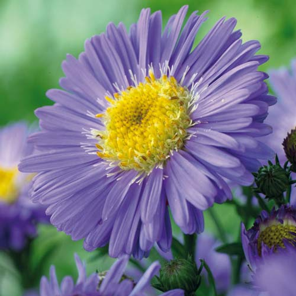
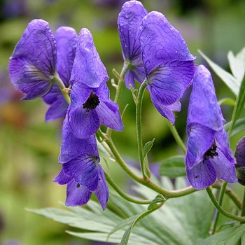
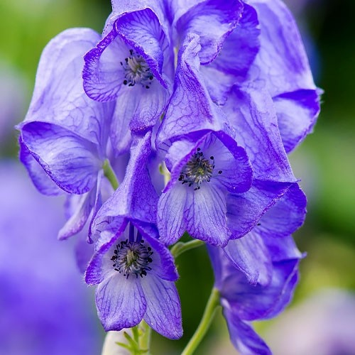

new1
Рослини Закарпаття
- Айстра альпійська

- Аконіт жакена

- Аконіт опушеноплодий

- Алекторія паросткова, алекторія лозовидна
- Аллоцетрарія океза, тукерманопсис океза, цетрарія океза
- Анакамтодон сплахноподібний
- Аспленій чорний
- Астрагал крайни
- Бамбузіна бребіссона
- Баранець звичайний
- Батрахоспермум зовнішньоплідний
- Беладонна звичайна
- Белонія геркулінська
- Береза темна
- Берека (горобина берека)
- Билинець довгорогий
- Билинець найзапашніший
- Билинець щільноквітковий
- Білопечериця дівоча, гриб-зонтик дівочий
- Білотка альпійська, едельвейс, шовкова косиця
- Білоцвіт весняний
- Білоцвіт літній
- Будяк пагорбовий
- Булатка червона
Закарпаття 🔎